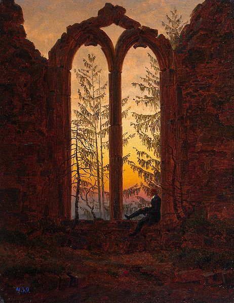
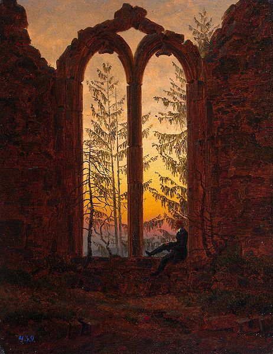

Caspar David Friedrich
- Nacimiento:
5 de septiembre de 1774; Greifswald, Germany
- Fallecimiento:
7 de mayo de 1849; Dresden, Germany
- Género:
Paisaje
- Campo:
Pintura
- Institución:
Universidad de Greifswald, Real Academia de Bellas Artes de Dinamarca, Escuela Superior de Bellas Artes de Dresde, Academia de las Artes de Berlín
Desde sus primeros pasos estuvo inmerso en el arte, cuando el estilo del romanticismo empezó a darse a conocer, cambió por la pintura. Esto fue determinante para el auge de su carrera, que lo llevó a ser parte de los artistas más populares y valiosos de la época. A pesar de su gran éxito en sus pinturas, caía en depresión constantemente, lo que conllevo a que se le determinara enfermedades mentales, la combinación de estos dos factores repercutió en su arte. Caspar fue parte de la primera generación de artistas libres, término implementado para los que no hacían obras por encargo; pintaba por gusto. Es considerado una de las grandes figuras en popularizar el romanticismo y se convirtió en un referente en el arte Alemán antes del siglo XX.